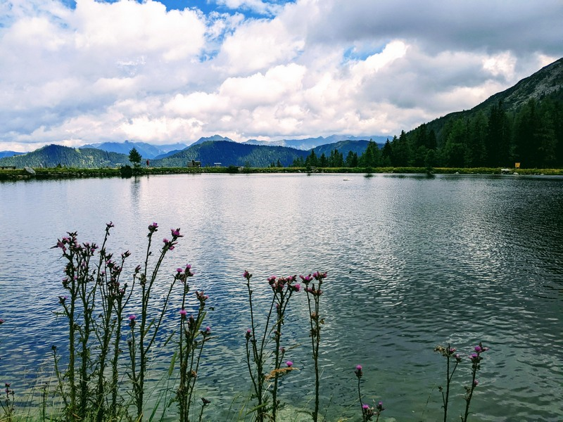

Už delší dobu to tu na blogu docela stagnuje. Nebyl čas, energie a vlastně ani chuť na nějaké psaní. Tenhle podzim nám dává celkem zabrat. Asi to znáte. Jsou dny a týdny, které uplynou a vlastně máte pocit, že proletěly jak mžik a nic zásadního nepřinesly. A pak se během pár dnů odehraje celý život. Tak nějak tak to teď mám. Do toho jsem narazila na jeden starší nevydaný článek, který mi tu visí už přes rok v konceptech. A zdá se mi vlastně aktuální natolik, že ho sem asi nakonec i po té době zveřejním.
Srpen 2021
Poslední dobou jsem se potácela v takové prazvláštní “postcovidové” depresi. Na vině je asi víc věcí - nejen celej ten divnej rok, co za sebou máme. Ale i fakt, že v poslední době nějak v mém světě nic nejde podle plánu. Není to tak, jak by to mělo být…
Dnešní den mi ale připomněl, že ty nejlepší věci v životě, se mi prostě staly. Nijak zvlášť jsem o ně neusilovala. Neměla jsem je vytyčené někde ve svém pomyslném harmonogramu s deadlinem pro splnění. Zkrátka mě potkaly. Moje nejlepší kamarádky, které mám od dětství až dodnes. Celkově dobrý kolektiv na gymplu, díky kterému vzpomínám na léta na střední v dobrém - a že je na co vzpomínat :-)! Práva - moje alma mater, na kterou jsem si dala přihlášku vyloženě jen z hecu a ani by mě nenapadlo, že to jednou doklepu až ke zdárné promoci. Nijak zvlášť mě za srdce nechytly, ale právě díky nim jsem získala svou současnou práci a s ní i nové přátele, a to bych za nic nevyměnila. Náhodné setkání jednoho večera v Yachtu, kde jsem se octla shodou celé řady okolností a potkala tam muže svého života. A nakonec i Oli, který mezi nás přišel s takovou lehkostí a samozřejmostí včetně toho, jak nekomplikovaně jsem prožila těhotenství a vlastně i porod (ač o tom bych rozhodně neprohlásila, že proběhl bez mého úsilí :D)…
“Někdy má člověk chuť udělat ve svém životě změnu, ale je potřeba být vděčný i za všechno to dobré, co je tady a teď.” A tak jsem vděčná - především za tahle dnešní slova, která mi umožnila podívat se na tu svou bublinu zase z jiné perspektivy. A znovu uvěřit v to, že ty dobré věci se prostě stanou.
